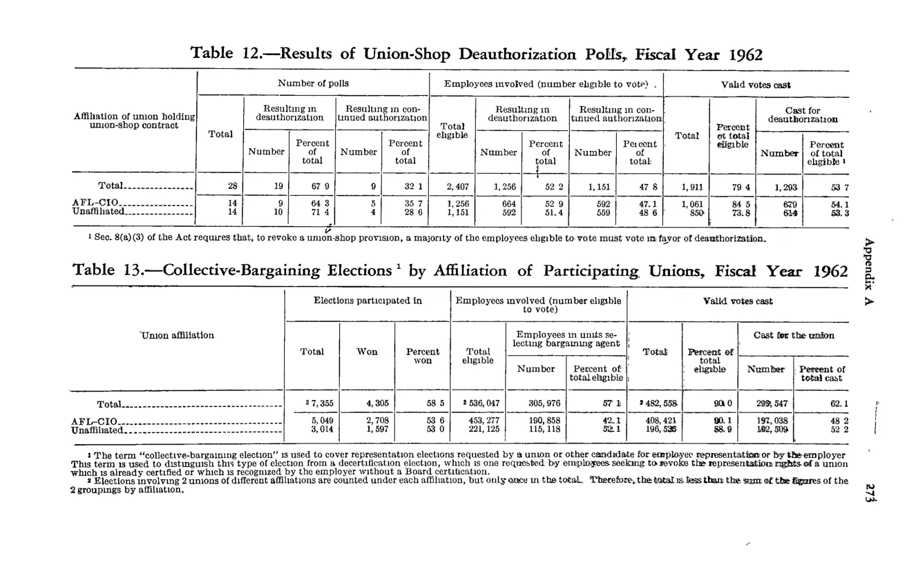

Home › FY1962 › Union-shop deauthorization (UD) polls held
| Affiliation of union holding union-shop contract | Number of polls — Total | Number of polls — Resulting in deauthorization — Number | Number of polls — Resulting in deauthorization — Percent of total | Number of polls — Resulting in continued authorization — Number | Number of polls — Resulting in continued authorization — Percent of total | Employees involved (number eligible to vote) — Total eligible | Employees involved — Resulting in deauthorization — Number | Employees involved — Resulting in deauthorization — Percent of total | Employees involved — Resulting in continued authorization — Number | Employees involved — Resulting in continued authorization — Percent of total | Valid votes cast — Total | Valid votes cast — Percent of total eligible | Valid votes cast — Cast for deauthorization — Number | Valid votes cast — Cast for deauthorization — Percent of total eligible |
|---|---|---|---|---|---|---|---|---|---|---|---|---|---|---|
| Total | 28 | 19 | 67.9 | 9 | 32.1 | 2,407 | 1,256 | 52.2 | 1,151 | 47.8 | 1,911 | 79.4 | 1,293 | 53.7 |
| AFL-CIO | 14 | 9 | 64.3 | 5 | 35.7 | 1,256 | 664 | 52.9 | 592 | 47.1 | 1,061 | 84.5 | 679 | 54.1 |
| Unaffiliated | 14 | 10 | 71.4 | 4 | 28.6 | 1,151 | 592 | 51.4 | 559 | 48.6 | 850 | 73.8 | 614 | 53.3 |

Source data: U.S. NLRB Annual Reports (public domain). Reconstruction by NLRB Stats Archive. Verify figures against the source scan. Updated June 2026. · About